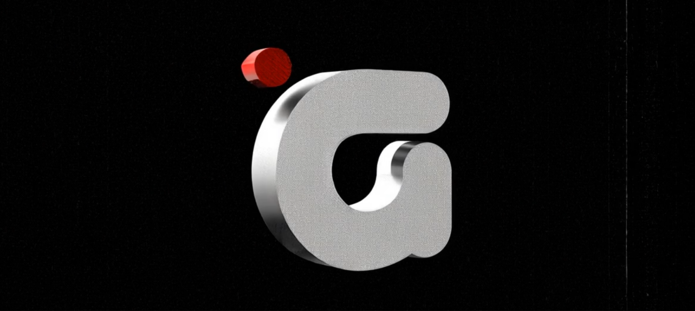

option 2: gothamcine1.framer.website
Color Palette: Although the basis is still a strict dark theme, we have taken a step towards using color. Red, as a key element of the corporate style, remains, but in terms of content filling (images, video), we have included more color for demonstration purposes.
Expanded Structure and Content: The start page in this version contains more sections. This allows not only to present the main assortment and services but also to add sections aimed at improving user experience (several new sections on rental topics) and demonstrating expertise (review of ready-made kits for specific types of filming). Part of these sections is designed to actively motivate the client to study the catalog and interact with the site.
Enhanced Dynamics and Interactivity: This variant implies a larger number of interactive elements and animations (for example, new scroll-slideshows, animated icons, or effects when hovering over cards). This makes the site more "alive" and engaging, both in the first and second design variants of the site.
Style and Feel: The overall design can be characterized as more dynamic, using "bold" and massive fonts for headings. At the same time, interface elements, such as buttons and cards, often have rounded forms, which adds some softness and friendliness to the design and corresponds to current trends in UI.
The first screen (Hero section) of this design variant aims to instantly declare the GOTHAM CINE brand, its character, and main proposition, using bold visual solutions.
The name "GOTHAM CINE," executed in a large, massive font, occupies a central place on the screen. Typography and a large inscription convey a sense of confidence, brutality, and a modern approach. And this generally does not interfere with the premium appearance.
In the upper part of the screen, only the most necessary elements are located: a compact "G" logo on the left, a hamburger icon to call the main menu (menu is not active yet), and a search icon on the right (the "SEARCH EQ" button, which also has an animation effect of coloring, which will be encountered further in the page design). This solution allows not to distract attention from the main message and preserves the purity of the composition.
Below the main heading, three small text blocks with icons are placed, which concisely convey information or advantages:
These elements can be replaced with something else. In the first variant, there is also an indicator of location in the hero section; we still don't know how important this moment is for you, but all this can be changed to more relevant information that will enhance the user's initial perception. In extreme cases, these text blocks can be removed altogether.
The space behind the large GOTHAM CINE inscription can also be used for a background image or video. But in this variant, we decided not to insert anything on the background for now, to let you see how a large accent inscription can cope with a bright greeting without additional interactive elements and content. The video is placed a little lower. There can be anything, but for now, we put a trailer for the ALEXA camera there, which has an interesting video sequence. Such a video sequence with frames from Hollywood films can also play on the user's perception when getting acquainted with the site, but we haven't figured out yet whether something like this can be inserted or if certain rights are needed for this. The quality of this demonstration video is currently low so as not to overload the site.
The site menu will have a similar structure and animation - it is a drop-down menu with the rest of the site dimming. The sections we have there are the same as in the first variant. It already exists, it's just not fully adapted and finalized yet.
For more details about the menu in general, see the reference for the first design variant: https://eleonorportal.github.io/Gotham_presentation-1/#section-02
To make the rental process as transparent and understandable as possible for the user, we included a special section that demonstrates the main stages of interaction with the GOTHAM CINE service.
The large headline "RENTING MADE EASY. SIMPLE STEPS TO YOUR GEAR" immediately communicates the section's goal – to simplify the understanding of the process. The sub-headline (e.g., "A clear path to securing the professional equipment you need for your production.") further emphasizes ease and clarity. Small text elements in the corners of the section (e.g., 01, //APPROACH, THREE PHASES) are stylistic elements that can either be adapted for numbering and section titles or removed for greater cleanliness if they do not carry a semantic load for GOTHAM CINE.
The process is broken down into three key stages (BROWSE & SEARCH, PICK DATES (or SELECT & CHECK DATES), REQUEST BOOKING), each represented by a separate block. This simplifies the perception of information compared to continuous text.
Each stage is accompanied by a set of three icons that visually reinforce the meaning of the step. Using simple, recognizable icons (e.g., camera/magnifying glass for search, calendar/checkmark/cart for selecting dates, envelope/airplane/handshake for a request) improves understanding and makes the block more attractive. The current icons are examples and can be replaced with more custom ones that match the corporate style. We also have ideas on how to further modernize this section, what other files can replace the images, but it still requires testing.
Under each stage headline, there is a very short description explaining the user's action. This helps to avoid text overload and maintain focus on key actions.
In the upper part of the section, there is also a visual element in the form of three numbered dots (01, 02, 03), connected by lines, which symbolizes sequence and progress through the stages. This is an intuitive way to show movement from one step to another.
Demonstrating a simple and clear rental process reduces potential barriers and concerns for new clients, showing that interaction with the service will not be complicated. This section plays an important role in educating the user and building their confidence in the simplicity and convenience of using the GOTHAM CINE service, which ultimately contributes to an increase in conversion to rental inquiries.
This example section also shows how we plan to implement rentals. Calendars and forms will be connected to the catalog, but we will, of course, coordinate all this with you further.
The section can also be located lower if necessary.
We have already discussed in detail the demonstration of brands in the reference for the first site variant; please familiarize yourself with it if you haven't done so already: https://eleonorportal.github.io/Gotham_presentation-1/#section-05
The only difference in the case of this site variant is that now the cards with brands are not in a static/motionless state but have an animation of a running line.
This "FULL PRODUCTION SUPPORT" section also illustrates the range of GOTHAM CINE's capabilities that go beyond simple equipment rental and is designed to convey to the client the idea of comprehensive support at all stages of production.
Note: In the first site variant, there was also a section with a similar structure and 5 cards at the beginning, but it reviewed the main subdivisions within the EQUIPMENT section (https://eleonorportal.github.io/Gotham_presentation-1/#section-06), this time we made a general section regarding the entire spectrum of services, which is more similar to the COMPLETE YOUR PRODUCTION section from the first variant (https://eleonorportal.github.io/Gotham_presentation-1/#section-08). We also leave the assessment of the appropriateness of such an introductory section at the very beginning (with an overview of the entire range of services) to you.
The large, accented headline "FULL PRODUCTION SUPPORT" immediately attracts attention and clearly states the section's theme. The accompanying text on the top right (e.g., "In addition to providing equipment, GOTHAM CINE offers comprehensive support services...") briefly expands on this concept, preparing the user for an acquaintance with specific services.
Five (can be more or less) cards representing various aspects of support are organized in a carousel or slider. This allows for a compact presentation of a significant amount of information without overloading the page with vertical scrolling (in the case of a desktop version of the site).
Each card includes:
The use of a slider or carousel adds interactivity and dynamism to the page, encouraging the user to interact with the content and view all available options.
The structure allows for easy addition of new cards as the range of services or equipment categories expands, without disrupting the overall composition. However, it's not advisable to overload this section with too many cards, as this would harm minimalism and the volume of the start page.
Overall, this section is designed to present GOTHAM CINE as comprehensively and compactly as possible as a universal partner and, right at the beginning of the site, provide the client with a choice in reviewing and familiarizing themselves with various services.
The "ABOUT GOTHAM CINE" section is designed not just as an informational block, but as a memorable visual experience that uses animation techniques to retain user attention.
When scrolling the page down, the "ABOUT GOTHAM CINE" headline first appears and fixes in the central part of the screen. The main visual accent is on the animation of the image located below the headline. As the page is scrolled further:
The combination of these animation techniques (sticky headline, overlay, zooming, parallax) is intended not only to attract attention but also to create a memorable "wow effect," demonstrating GOTHAM CINE's modern and technological approach to its online presence. This distinguishes the site from static counterparts and makes interaction with it more engaging.
Overall, we primarily wanted to demonstrate a similar effect to you, which can be applied to another section, not necessarily to the "About" section. But here it currently looks appropriate.
To demonstrate the versatility of the offered equipment and services, and to help various segments of the target audience see GOTHAM CINE as their potential partner, we have developed the "INDUSTRIES WE CAN SUPPORT" section.
Instead of simply listing technical specifications, this section shows for which types of projects and in which industries GOTHAM CINE's equipment and support can be most in demand. This helps clients correlate the company's offer with their specific tasks.
The use of an interactive "accordion" element (where more detailed information is revealed by clicking on the heading) allows for a compact presentation of a significant amount of information without overloading the page. The user can quickly scan the main directions (Feature Films & Episodic TV, Commercials & Music Videos, Corporate & Live Events, etc.) and delve only into those that are of interest to them.
Each accordion item, when expanded, contains:
The large section headline and clear division of accordion points ensure good visual hierarchy. The design style (dark background, accent colors, typography) corresponds to the overall site design. The accompanying text on the top right briefly explains the purpose of the section.
It is important to emphasize that the directions and details presented here are examples and do not exhaust all of GOTHAM CINE's capabilities. The list of industries can be expanded or adapted in the future. Current images and text formulations are also demonstrational and will be finalized to accurately reflect the specifics of GOTHAM CINE's services for each segment.
This section demonstrates the breadth of application of GOTHAM CINE equipment and the company's ability to provide individual solutions for various production needs, which can strengthen its position in the user's perception of the site.
Also, below this section, a placeholder for video is placed. For a minimalist style, we created a simple 3D animation with the Gotham Cine logo; in the future, it can be slightly improved or any other video can be inserted.
This section serves for a powerful visual and textual emphasis on the quality and level of the GOTHAM CINE equipment offered, particularly flagship cameras. In its impact and structure, it partially echoes the atmospheric slideshow we considered in the first design variant (https://eleonorportal.github.io/Gotham_presentation-1/#section-07), offering the user a visually rich but not informationally overloaded experience.
A large text highlighted in red (e.g., "THE BEST CAMERAS MAKE THE BEST IMAGES. RENT THE GEAR THAT DEFINES PROFESSIONAL CINEMATOGRAPHY TODAY. OUR ARSENAL FEATURES FLAGSHIP MODELS READY TO ELEVATE YOUR VISION.") acts as a bold statement. It directly speaks about the connection between equipment quality and the quality of the final product, positioning GOTHAM CINE as a supplier of precisely such instruments. The use of a massive font and accent color makes this statement a dominant element of the section. A small "G" logo above the text further enhances branding.
Below the text block is a horizontal carousel displaying images of several (in this case, six), presumably flagship camera models. Similar to the scroll-slideshow section in the first variant, this carousel offers a smooth change of visual images upon user interaction. The absence of captions under the images in the current variant focuses all attention on the visual representation of the equipment itself, without overloading the user with additional information at this stage. For such a solution, more suitable images with more appropriate angles can be selected.
In the future, each card with a camera image in the carousel can be made clickable and lead directly to the page of that model in the catalog. This will turn a purely visual element into a functional navigation tool.
Although this section is currently focused on cameras, its structure (textual statement + image carousel) is quite versatile and can be adapted in the future to demonstrate other categories of equipment or even used for a different purpose altogether.
Immediately before the block with key statistical indicators, a dynamic visual strip is placed. This element is a horizontally and continuously scrolling series of images with various items from the catalog. They can be supplemented with links to the corresponding products, or the visual series can be replaced with something else (for example, some atmospheric photos).
We discussed statistics with numbers in detail in the first design variant; please follow the link if you haven't read it yet: https://eleonorportal.github.io/Gotham_presentation-1/#section-03
We propose for consideration the idea of ready-made packages with the necessary set of equipment for specific types of filming.
To simplify the choice of equipment for specific filming tasks and to demonstrate the flexibility of GOTHAM CINE's proposals, we have developed the "POPULAR RENTAL PACKAGES" section. This block is aimed at providing clients with ready-made, well-thought-out solutions and increasing client motivation when working with the site.
Sometimes it may be useful for a client not to independently assemble a kit from individual catalog positions, but to immediately consider several pre-configured sets for specific types of filming. This is especially useful for those who are looking for a quick and proven solution or are not entirely confident in the specifics of the necessary equipment. These kits are, of course, demonstrational in nature, and in the future, the section can be expanded, and the number of positions can be increased. We are also thinking about how such a function might work (items can be automatically added to the cart, or links can lead to a blog post where similar kits are discussed in more detail with individual links for each piece of equipment), but for now, we suggest just considering this idea. It may be useful in the future.
Each kit card is clearly structured to provide all necessary information:
A clear list of what is included in each package helps the client understand the value of the offer and its compliance with their needs. At the moment, prices are not indicated on these cards on the main page, as the final cost depends on the rental period. However, it is assumed that a specific button (e.g., "View Details") will lead to a page where details can be clarified.
By offering ready-made packages, we save the client's time in selecting equipment and help avoid situations where something important might be missed, especially if the client is not an experienced professional.
Although "popular" packages are presented, this does not exclude the possibility of individual equipment configuration through the main catalog in the future.
This section not only demonstrates the assortment and understanding of the needs of various types of filming but also actively helps the client in the selection process, making it simpler and more convenient, which ultimately increases satisfaction with the GOTHAM CINE service.
We have already discussed this section similarly in the previous site design variant: https://eleonorportal.github.io/Gotham_presentation-1/#section-10
There is only a slight visual difference here in terms of the card shapes and additional initial text for articles located within the page (this is what the blog section in the first site variant currently lacks). Otherwise, the blog articles block serves a similar function and design.
We have also already covered this section in the previous site design variant: https://eleonorportal.github.io/Gotham_presentation-1/#section-09
Overall, the visual and functionality are the same, only now for the desktop version of the site, we have 2 moving lines with Gotham Cine employees, which allows covering more experts and presenting them for consideration on the main page.
The FAQ section is completely analogous to that in the first site variant (https://eleonorportal.github.io/Gotham_presentation-1/#section-11).
You might have noticed that a shopping cart button has been accompanying you in the corner of the screen all this time (indicated by a red arrow in the image above). Perhaps on the main page, it won't be needed in the future, but this is something that is useful to have at hand. It can also be replaced with another function, for example, a message with a special offer.